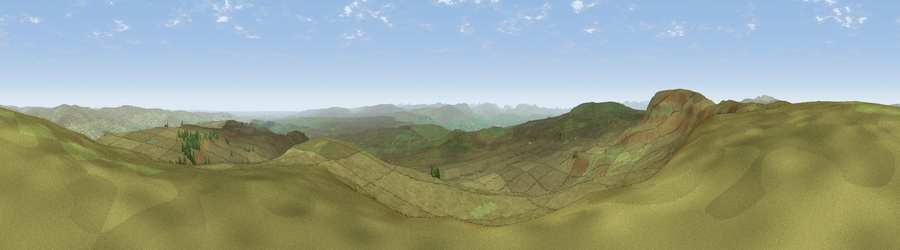

Viewpoint c10490_7651
#2908 in England · top 2% of its area beats it · —The view, rendered

A 360° render of this exact spot computed from the terrain model, tree cover and land cover — summer colours, afternoon light, calibrated against photographs of famous viewpoints. Real trees, hedges and buildings will differ in detail.
The panorama
Grey silhouette: terrain skyline in each direction (720 bearings, Earth curvature and refraction included). Dashed green: skyline with trees (+15 m) and buildings (+8 m) as obstacles. Blue strip: how far the ground is visible on each bearing.
Where the view opens
Wedge length = distance to the farthest visible ground on that bearing (vegetation-aware). Rings at 10, 25 and 50 km.
What fills the view
99% grassland ·
Angular shares of the visible panorama (visual magnitude), not map area. Landscape diversity 0.03 (0–1 Shannon).
Key numbers
More beautiful places nearby
The staircase of upgrades: each row has a higher view potential than everything closer. Driving times are estimates from straight-line distance, calibrated against real road routing — check an actual route before setting out.
| Place | Direction | Drive | Score |
|---|---|---|---|
| Mickle Fell | W · 2 km | ~5 min | 75.8 |
| Great Dun Fell | WNW · 14 km | ~25 min | 77.8 |
| Little Dun Fell | NW · 15 km | ~27 min | 78.4 |
| Cross Fell | NW · 17 km | ~30 min | 78.7 |
| Fell Head | SSW · 32 km | ~49 min | 78.8 |
| Calders | SSW · 32 km | ~50 min | 79.0 |
| Viewpoint near Watermillock | W · 36 km | ~55 min | 82.6 |
| Viewpoint near Watermillock | W · 37 km | ~55 min | 83.5 |
54.61513, -2.27056 · source: screening · position refined by local search. Computed location — check access rights before visiting.